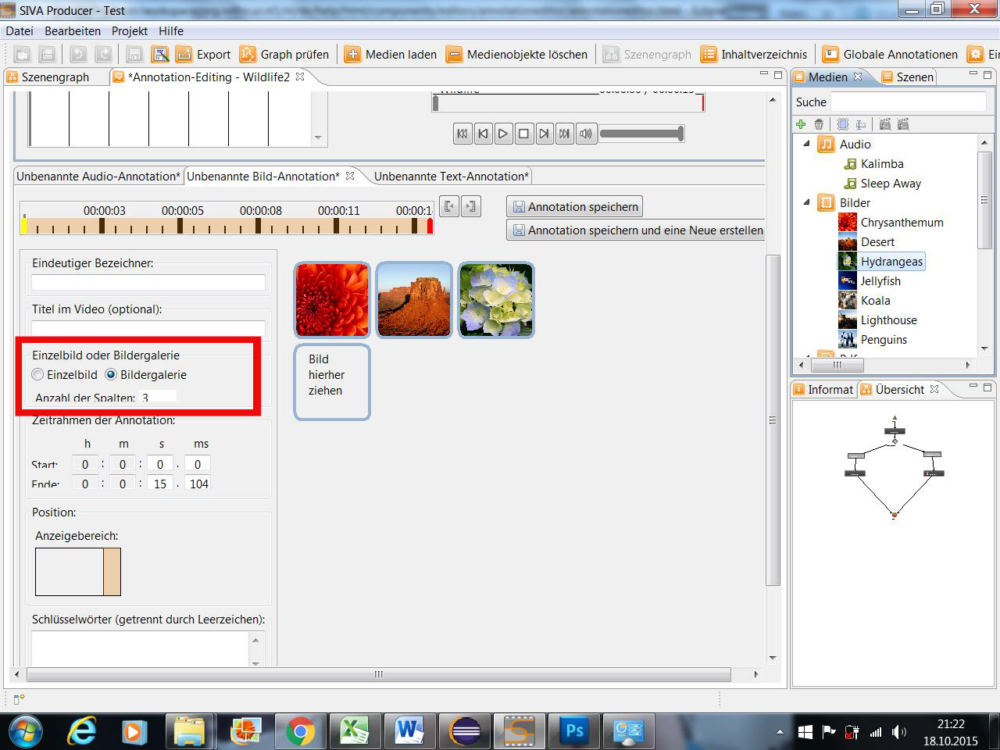

Die Annotation kann als einzelnes Bild oder als Bildergallerie (bestehend aus mehreren Bildern) erstellt werden.

Wurde eine Bildergallerie ausgewählt, so kann man zusätzlich die Spaltenanzahl bestimmen. Ändert man die Bildergallerie in einer Szene, in der sie verwendet wurde, so wirkt sich dies auf alle Szenen in der diese Annotation verwendet wurde, aus.
Für weitere Details siehe: "Erstellen von Annotationen"